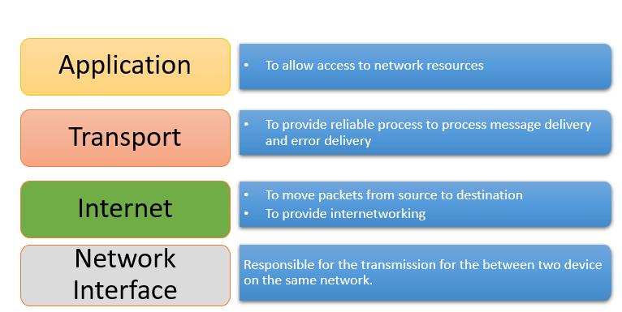

is a reference model for how applications communicate over a
network.
A reference model is a conceptual framework for understanding relationships. The
purpose of the
OSI reference model is to guide vendors and developers so the digital communication products
and
software programs they create can interoperate, and to facilitate a clear framework that
describes the functions of a networking or telecommunication system.
And although it is useful for guiding discussion and
evaluation, OSI is rarely actually implemented as-is. That's because few network products or
standard tools keep related functions together in well-defined layers, as is the case in the
OSI
model. The TCP/IP protocol suite, which defines the internet, does not map cleanly to the
OSI
model. As seen in the figure below.
1. Physical Layer (Layer 1) :
The lowest layer of the OSI reference model is the physical layer. It is responsible for
the actual physical connection between the devices. The physical layer contains
information in the form of bits. It is responsible for the actual physical connection
between the devices. When receiving data, this layer will get the signal received and
convert it into 0s and 1s and send them to the Data Link layer, which will put the frame
back together.
2. Data Link Layer (DLL) (Layer 2) :
The data link layer is responsible for the node to node delivery of the message. The
main function of this layer is to make sure data transfer is error free from one node to
another, over the physical layer. When a packet arrives in a network, it is the
responsibility of DLL to transmit it to the Host using its MAC address.
3. Network Layer (Layer 3) :
Network layer works for the transmission of data from one host to the other located in
different networks. It also takes care of packet routing i.e. selection of the shortest
path to transmit the packet, from the number of routes available. The sender &
receiver’s IP address are placed in the header by network layer.
4. Transport Layer (Layer 4) :
Transport layer provides services to application layer and takes services from network
layer. The data in the transport layer is referred to as Segments. It is responsible for
the End to End delivery of the complete message. Transport layer also provides the
acknowledgment of the successful data transmission and re-transmits the data if an error
is found.
5. Session Layer (Layer 5) :
This layer is responsible for establishment of connection, maintenance of sessions,
authentication and also ensures security.
6. Presentation Layer (Layer 6) :
Presentation layer is also called the Translation layer.The data from the application
layer is extracted here and manipulated as per the required format to transmit over the
network.
7. Application Layer (Layer 7) :
At the very top of the OSI Reference Model stack of layers, we find Application layer
which is implemented by the network applications. These applications produce the data,
which has to be transferred over the network. This layer also serves as a window for the
application services to access the network and for displaying the received information
to the user.
DoD Four Layer Model
The Department of Defense created TCP/IP to ensure and preserve date
integrity. The DoD model is a condensed version of the OSI model and only has four layers.
The four layers of the DoD Model are as follows:
Application layer (Layer 4) The application layer is where higher-layer protocols,
services, and applications such as HTTP, DNS, SMTP, and FTP function and reside. The
application layer roughly overlays the application, presentation, and session layers of
the OSI model.
Host-to-host or transport layer (Layer 3) The host-to-host layer is where protocols such
as TCP and UDP reside. It handles flow control, connection and session establishment,
maintenance, and teardown. The host-to-host layer roughly overlays the transport layer
of the OSI model.
The Internet layer (Layer 2) The Internet layer is where protocols such as IP reside and
handles the logical addressing and routing of data across the network. The Internet
layer roughly overlays the network layer of the OSI model.
The network access layer (Layer 1) The network access layer handles the physical
addressing and delivery of data across the network and is where protocols such as 802.2,
802.3, and Ethernet reside. The network access layer roughly overlays the datalink and
physical layer of the OSI model.
TCP/IP Stack
TCP/IP is a large family of protocols that is named after its two
most important members.
TCP/IP helps you to determine how a specific computer should be connected to the internet and
how data should be transmitted between them. It helps you to create a virtual network when
multiple computer networks are connected together.
TCP/IP stands for Transmission Control Protocol/ Internet Protocol. It is specifically
designed as a model to offer highly reliable and end-to-end byte stream over an unreliable
internetwork.
The functionality of the TCP/IP model is divided into four layers, and each includes specific
protocols.
TCP/IP is a layered server architecture system in which each layer is defined according to a
specific function to perform. All these four layers work collaboratively to transmit the
data from one layer to another.

1. Network Access Layer
This layer corresponds to the combination of Data Link Layer and Physical Layer of the
OSI model. It looks out for hardware addressing and the protocols present in this layer
allows for the physical transmission of data.
We just talked about ARP being a protocol of Internet layer, but there is a conflict
about declaring it as a protocol of Internet Layer or Network access layer. It is
described as residing in layer 3, being encapsulated by layer 2 protocols.
2. Internet Layer
This layer parallels the functions of OSI’s Network layer. It defines the protocols
which are responsible for logical transmission of data over the entire network.
3. Host-to-Host Layer –
This layer is analogous to the transport layer of the OSI model. It is responsible for
end-to-end communication and error-free delivery of data. It shields the upper-layer
applications from the complexities of data.
4. Process Layer –
This layer performs the functions of top three layers of the OSI model: Application,
Presentation and Session Layer. It is responsible for node-to-node communication and
controls user-interface specifications. Some of the protocols present in this layer are:
HTTP, HTTPS, FTP, TFTP, Telnet, SSH, SMTP, SNMP, NTP, DNS, DHCP, NFS, X Window, LPD.